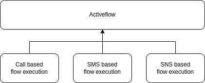

Overview
The activeflow is a dynamic entity within the VoIPBIN system that plays a vital role in representing the real-time state of a registered flow. As the flow is executed, it generates an activeflow, which contains an action cursor and relevant status information. This activeflow serves as a control interface, providing efficient management and flexibility during flow execution.
In essence, the activeflow concept is a powerful tool that facilitates the smooth and flexible execution of registered flows. Its dynamic nature allows for real-time updates, ensuring that users can monitor and manage the flow execution efficiently.
By providing real-time status updates and a flexible control interface, the activeflow becomes a valuable tool for businesses to efficiently manage complex workflows and automate their critical processes. The stop functionality adds an extra layer of control and adaptability, allowing users to make informed decisions and optimize their flow executions as required.
Execution
The activeflow’s significance lies in its ability to manage complex workflows and automate business processes effectively. As the flow progresses through its various stages, the activeflow dynamically represents its current state. This representation provides valuable insights into the flow’s progress and status, enabling efficient and informed management of its execution.
Status and Control interface
The activeflow includes essential status information that allows users to monitor the flow’s progress closely. This information encompasses details about the activeflow’s current state, including completed and pending actions. Additionally, the activeflow offers a control interface that empowers users to manage the execution process. This interface enables actions such as stopping the activeflow at any point and modifying its configuration or parameters as needed.